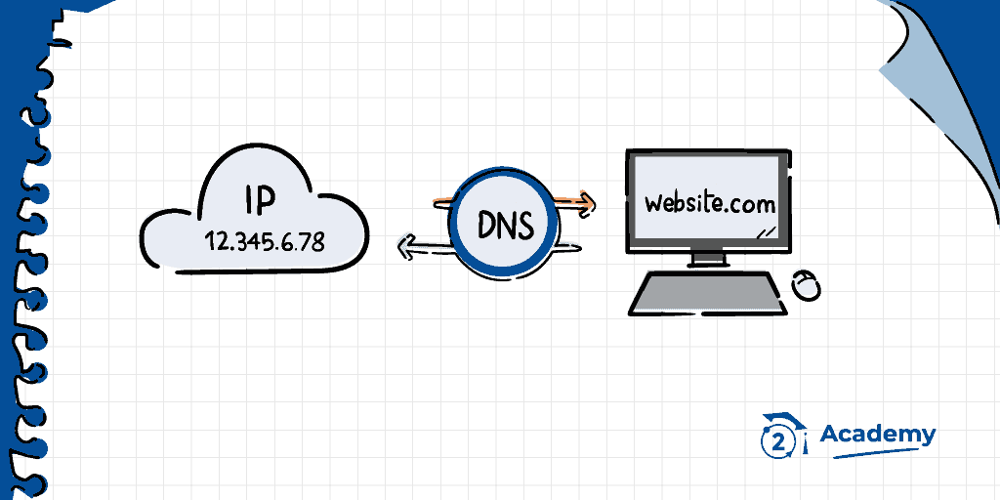
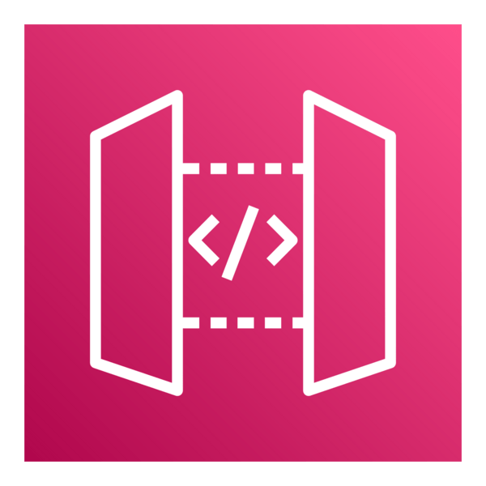

Hands-on AWS & IT Infrastructure Projects
Designed a solution for accessing S3 without routing traffic through the public internet.
View MoreComparing network latency across EC2 instances inside and outside a Cluster placement group.
View MoreDesigned a simple solution that allows a secure connection to a PostgreSQL database installed on a Red Hat EC2 instance.
View MoreDeployed and managed a personal website using AWS S3 for hosting, Route 53 for DNS, and Lambda for backend logic.
Visit Site
Implemented a simple but functional DNS server allowing AWS EC2 instances to communicate via hostnames.
View MoreUsed Amazon Athena to query and transform CloudWatch logs into a more usable format for analysis.
View MoreDeveloped an ETL pipeline using Boto3 to create a CSV, upload it to S3, and trigger a Lambda function to process the text data.
View More
Designed a serverless AWS architecture for a website hosted on S3/CloudFront, adding a dynamic layer via API Gateway, Lambda, and DynamoDB.
View MoreEngineered a Python-based generator containerized with Docker. Infrastructure provisioned via Terraform with automated CI/CD deployments using GitHub Actions.
View MoreDeveloped a simple website visitors counter using AWS Lambda functions and DynamoDB.
View MoreDeveloped an automated email notification system using AWS DynamoDB, Python, Gmail and GitHub Actions.
View MoreDeveloped a secure website signup system using Amazon Cognito for authentication and AWS Lambda for backend logic
View MoreDevelops an AI agent for WhatsApp Business using AWS Bedrock. Used RAG (Retrieval-Augmented Generation) for enhanced conversational capabilities.
View More